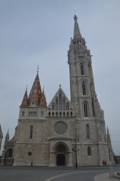
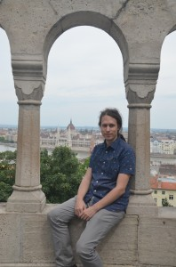
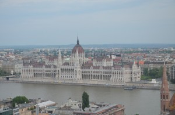

Už zase nás to tam táhne. Na jih, za vínem, za Pálavou na obzoru. Vzpomínka na tropický víkend, o kterém jsme si mysleli, že bude v tomto létě raritou a místo toho se protáhnul na celý tropický měsíc :-). Od nápadu k činu tentokrát chybělo velmi málo – během chvilky jsme se rozhodli, zavolali do prvního penzionu a když nám řekli, že mají volno, okamžitě jsme kývli. A jelo se do Znojma!
Znojmo je překrásné. Pokud jste tam, stejně jako já, dosud nebyli, určitě to napravte. Pyšní se půvabným historickým centrem, výhledem na údolí řeky Dyje i unikátní románskou rotundou svaté Kateřiny. U ní jsme také zahájili náš turistický okruh. Rotunda je jedinou zcela dochovanou památkou přemyslovského knížecího hradu ve Znojmě a je veřejnosti přístupná pouze v závislosti na aktuálním stavu mikroklimatu v interiéru. My bohužel neměli štěstí a za naší návštěvy byla zavřená. I tak ale stojí za podívání, už kvůli tomu překrásnému výhledu do okolí! Rotunda je součástí komplexu znojemského hradu a v jejím těsném sousedství se nachází také pivovar, který momentálně prochází rekonstrukcí.
K další významné znojemské dominantě patří kostel svatého Mikuláše, který zaujme svým interiérem – především originální barokní kazatelnou ve tvaru zeměkoule.
Až vás procházky malebnými křivolakými uličkami centra unaví, posaďte se do stínu radniční věže. Nejen že budete mít přímý výhled na další místní zajímavost, ale navíc se tu nachází výborná kavárnička, kde dělají lahodnou domácí limonádu. Pozdně gotická radniční věž má velmi zajímavou věžičkovou střechu, která byla původně kryta břidlicí. Většina nosných trámů pod střechou věže je dosud původních – starých přes 500 let!
Naprosto unikátní atrakcí, kterou jen tak někde neuvidíte, je tajemné znojemské podzemí. Labyrint podzemních chodeb je dlouhý cca 25 km a byl vybudován opravdu důmyslně – včetně kouřovodů, studní a větracích šachet. Vznikal už od 14. století a v dobách válek a obléhání představoval pro místní obyvatele důležité útočiště. Můžete si vybrat rovnou ze tří tras, kterými se do podzemí můžete vydat. My jsme šli trasu č. 1, která je zakončena degustací vína O:-). Nově se teď ale otevřely také dvě adrenalinové trasy, které absolvujete už se speciálním vybavením a v poněkud stísněnějším prostoru – zkrátka nic pro klaustrofobiky. Trasu č. 1 ale můžeme doporučit každému a rozhodně si při návštěvě Znojma nenechte tyto podzemní prostory ujít!
Ve Znojmě bylo prostě báječně a už teď se těšíme, že se tam zase vrátíme. Možná hned na podzim, na burčákové slavnosti ;-).
Dlouho tu nebyl žádný tip na nějaký výlet po Čechách, a tak vás dnes vezmu s sebou do Moravského Krumlova, kam jsme se vydali poslední květnový víkend, zlákáni hezkým počasím.
Cestou jsme se zastavili ještě v Ivančicích, malebném městečku, které proslavili jeho významní rodáci Vladimír Menšík a Alfons Mucha. Zdejší muzeum, kde bychom se o nich dozvěděli víc, však bylo v neděli dopoledne zavřené a navíc jsme v okolí náměstí nenašli žádnou slušně vypadající restauraci, kde bychom se mohli naobědvat, a tak jsme si jen prošli náměstíčko, podívali se do kostela Nanebevzetí panny Marie a na židovský hřbitov (prý jeden z nejstarších v republice), kde jsme si odlovili kešku a pokračovali směrem do Moravského Krumlova.
Ivančice
Stejně jako známější Český Krumlov, i Moravský Krumlov téměř ze všech stran obtéká řeka – Rokytná. Historické centrum města bylo bohužel na konci druhé světové války fatálně vybombardováno. Jednou z památek, která bombardování jen zázrakem přežila, je zdejší zámek. Bohužel i ten už dnes zoufale volá po opravě. Pokud vás k prohlídce nenaláká zámek, můžete alespoň zavítat do přilehlého zámeckého parku, který je příjemným místem k poobědovému odpočinku.
Zámek
Dominantou městečka je kaple svatého Floriána, který je patronem Moravského Krumlova. Kaple je postavena z tesaného kamene, má tři vchody a čtyři vížky v rozích. Pro veřejnost se otevírá pouze několikrát ročně – my měli to štěstí, že se zde zrovna konala nějaká slavnost a mohli jsme se podívat dovnitř i vyslechnout krátkou přednášku o její historii.
Floriánek
V okolí Moravského Krumlova je spousta možností pro pěší výlety. Můžete se vydat naučnou stezkou, která vás zavede do Národní přírodní rezervace Krumlovsko-rokytenské slepence. My jsme ale bohužel už tolik času neměli, a tak jsme u Floriánka náš výlet zakončili.
Máte nějaký tip na další zajímavé místo k výletování? Léto bude ještě dlouhé …
V dnešním příspěvku se ještě jednou vrátím do dalekého Istanbulu, abych vám ukázala další krásná místa, než mé vzpomínky na ně vyblednou.
Za nejkrásnější mešitu, kterou jsme v Istanbulu navštívili, bych označila tzv. Novou mešitu, která je navzdory svému názvu stará už 400 let. Interiér je bohatě vyzdoben zlatem, barevnými keramickými dlaždicemi a mramorovými reliéfy. Mešita leží na pobřeží s výhledem na Bosporskou úžinu a oproti ostatním mešitám přeplněným turisty byla tato velice klidná, poloprázdná, a možná právě proto ve mně zanechala tak příjemný dojem.
Co by to ale bylo za návštěvu Istanbulu, kdybychom nezavítali také na některou z proslavených tržnic! Prvním a nejznámějším nákupním střediskem Istanbulu je tzv. Velký bazar a ujišťuju vás, že jestli se dá někde v Istanbulu báječně ztratit, je to právě tady :D. Jakmile zaplujete do jeho uliček a necháte se unášet davem i vystaveným zbožím, zbývá už jen doufat, že se někdy ještě dostanete ven :D. Není proto divu, že jsem v průvodci od Lonely Planet objevila mezi přiloženými mapami také přímo mapu Velkého Bazaru. Najdete tu více než 4000 obchodů a obvykle se u sebe nachází krámky s podobnou tematikou, např. zlato, oděvy, kožené zboží apod. To je ostatně pro Istanbul celkem specifické – všimla jsem si toho v celé řadě čtvrtí. Procházeli jsme ulicí a najednou kolem nás byly jen samé obchody s hudebními nástroji. Nebo jen s lampami a osvětlením. Nebo jen se svatebními šaty. Zpočátku mě to překvapilo, ale nakonec jsem usoudila, že to musí být velice praktické. Pokud sháníte konkrétní věc, prostě jen jdete do jedné ulice, tu projdete od začátku až na konec, obhlídnete nabídku a ceny a pak si vyberete :D. Taky jsem už dlouho nikde neviděla tak vysokou koncentraci krámků s fejky značkových kabelek, bot a oděvů :D. Při procházení tureckým trhem je potřeba obrnit se mimořádně velkou dávkou trpělivosti na odhánění vtíravých prodavačů – to už ale tak nějak patří ke zdejšímu koloritu. Pokud si libujete ve smlouvání, bude to tu pro vás učiněný ráj :D.
Velký bazar – shopaholikův ráj
Mně se atmosférou více než Velký bazar zalíbila tržnice s kořením, nazývaná také někdy Egyptský trh. Nachází se hned vedle Nové mešity a jak již název napovídá, spíš než oblečení tady seženete něco dobrého k jídlu – a na to mě na cestách užije :D! Nekonečné množství lokumů všech možných druhů, pestrobarevné koření, voňavé čaje, káva, kosmetika…
Jednou z dominant Zlatého rohu a symbolů celého města je velkolepá Süleymanova mešita. Byť nepatří k těm největším v Istanbulu, díky své poloze je prakticky nepřehlédnutelná. Údajně je také jednou z neoblíbenějších a spolu s Modrou mešitou soupeří v počtu věřících, kteří se sem chodí modlit.
Fanoušci detektivek Agathy Christie si v Istanbulu rozhodně nesmí nechat ujít návštěvu železničního nádraží Sirkeci, které bylo vybudováno jako konečná stanice evropských drah v roce 1881.
Poslední den našeho pobytu jsme se rozhodli opustit Sultanahmet a vydat se lodí do vzdálenější Západní čtvrti, kde se nachází také několik zajímavých památek. My jsme navštívili dvě. Tou první byla Eyüpova mešita. Jedná se o čtvrté nejposvátnější místo muslimů – hned po Mekce, Medině a Jeruzalémě. Komplex budov této mešity totiž údajně stojí na místě, kde byl pohřben přítel proroka Mohameda a uctívaný náboženský vůdce v dobách počátku islámu, Ajjúb al-Ansari. Západní čtvrť patří v Istanbulu k těm nejortodoxnějším a potkáte zde nejvíce zahalených žen. Já budu mít toto místo spojeno s docela kuriozním zážitkem, kdy si mě u východu z mešity odchytly tři asi desetileté muslimské holčičky a poprosily mě, zda by se se mnou mohly vyfotografovat :D. To asi ty před cestou čerstvě nabarvené zrzavé vlasy :D…
Pokud už se octnete v Západní čtvrti, určitě byste si neměli nechat ujít návštěvu kláštera Chora. Veškerá vnitřní výzdoba této pozoruhodné budovy (proslulé mozaiky a fresky) pochází z roku 1312. Ne všechny se zachovaly v dobrém stavu, ale i tak jsou velmi působivé.
Klášter ChoraMozaiky
Posledním zastavením mého vyprávění je Galatská věž vybudovaná v roce 1384. Musíme se za ní vrátit do severní části Zlatého rohu. Věž přežila celou řadu zemětřesení a přesto je v tak dobrém stavu, že by člověka ani nenapadlo, že už je tak stará. V horní části věže je (poněkud úzký) ochoz, z něhož je nádherná vyhlídka na město i jeho okolí. Jaké lepší místo si vybrat pro rozloučení s Istanbulem?
Galatská věž
Přestože těch pět dnů v zalidněné metropoli bylo dost vyčerpávajících, jsem ráda, že jsem měla možnost toho za tak krátkou dobu tolik vidět. I ty uchozené nohy na konci každého dne za to stály. Doma je ale přece jen doma, a tak jsem ráda, že po hektickém květnu si teď můžu zase užívat chvilku klidu a pohody… než zase nazuju toulavý boty :-).
V dnešním příspěvku bych ráda zmínila několik míst, která jsem za těch pár dní v Istanbulu stačila navštívit. Vzhledem k tomu, že jsme byli ubytováni v turisticky vyhledávané čtvrti Sultanahmet, měli jsme téměř všechny významné istanbulské památky v dosahu pěší chůze. Právě zde se nacházelo srdce byzantské a osmanské říše, budovaly paláce, chrámy a další významné budovy. Ve středu této čtvrti leží byzantský hipodrom, kde se v minulosti odehrála řada politických a mocenských dramat. Za pozornost zde stojí Hadí sloup, který byl vztyčen již v roce 478 př.n.l. v Delfách – okolo roku 330 našeho letopočtu ho pak na toto místo přepravil císař Konstantin Veliký. Ze sloupu pravda nezbylo mnoho – přesto je fascinující vidět tak starou památku! Část jedné hadí hlavy, která se dochovala, je uložena v Istanbulském archeologickém muzeu.
Hadí sloup
Žulový Theodosiův obelisk, který se nachází opodál, už rovněž něco pamatuje – byl vytesán v Egyptě zhruba v roce 1450 před našim letopočtem. Do tehdejší Konstantinopole byl převezen v roce 390 našeho letopočtu císařem Theodosiem.
Nakonec dojdete po hipodromu až ke kašně císaře Viléma, která byla darem německého císaře Turecku jako projev přátelství.
Kašna císaře Viléma
Přímo z hipodromu se dostanete k jedné z nejznámějších istanbulských mešit – Modré mešitě, která měla ve své době svou majestátností předčit nedaleký chrám Aya Sofya. Má více minaretů, než kterákoliv jiná mešita ve městě. Stejně jako většina ostatních mešit v Istanbulu, i tato je turistům volně přístupná. Pro ženy je zde k zapůjčení nějaké to roucho či šátek na zahalení.
Od Modré mešity už je to jen coby kamenem k hlavní istanbulské ikoně – chrámu Aya Sofya, který nechal postavit císař Justinián na místě bývalé byzantské akropole a byl dokončen roku 537. Po dobytí Cařihradu v roce 1453 byl křesťanský chrám přebudován na mešitu. Dnes už svému původnímu účelu neslouží – v roce 1934 byla Aya Sofya prohlášena za muzeum.
Aya Sofya
Mojí osobní istanbulskou srdcovkou, kterou by bylo škoda nechat si ujít, je Vodní nádrž baziliky. Tato podivuhodná podúrovňová stavba, kterou nechal vybudovat císař Justinián v roce 532, je největší byzantskou cisternou v Istanbulu. Zdejší chladivé podzemní prostory oceníte zejména v parném letním počasí :-). Střechu nádrže podpírá 336 sloupů, uspořádaných ve 12 řadách. Vaší pozornosti by neměly uniknout zejména sloupy v severozápadním rohu, které jsou podepřené bloky ve tvaru hlav Medúz. A nezapomeňte si s sebou vzít nějaké pečivo od snídaně, ať můžete nakrmit rybičky v nádrži :-)!
I přes mou upřímnou snahu o stručnost se mi sem dnes asi nevejde úplně všechno, co bych chtěla zmínit, takže na další istanbulské památky a zajímavá místa se můžete těšit zase příště ;-).
Přestože moje loňská služební cesta do Alicante nasadila laťku pěkně vysoko, letošní konference v Istanbulu jí měla být nemalou konkurencí – vždyť poprvé v životě uvidím na vlastní oči Asii!!! O dojmy z této krátké cesty bych se s vámi ráda podělila v několika následujících článcích. A rovnou asi začnu tím, na co se všichni nejčastěji ptají a co by vám mohlo být užitečnou informací, pokud byste se chtěli do Istanbulu také vypravit.
Most mezi Evropou a Asií
Cesta
Letěli jsme tam i zpět s Turkish Airlines a můžu říct, že to byly po všech směrech asi nejlepší lety v mém životě. Svůj podíl na tom jistě mělo i krásné počasí. Servis během letu byl také perfektní a hlavně jsem snad poprvé dostala v letadle opravdu moc dobré jídlo :D! Letěli jsme z Vídně a cesta trvala necelé 2 a půl hodiny. Pozor na to, že Istanbul leží v jiném časovém pásmu – je potřeba si přeřídit hodinky o 1 hodinu dopředu.
Doprava
První dojem: totální chaos. Cestou z letiště do hotelu jsme přestupovali pouze jednou, nicméně nám trvalo pěkně dlouho, než jsme se zorientovali, kterým směrem vlastně máme jet. Tramvaje i metro byly téměř neustále přeplněné lidmi a cesta se zavazadly v tom parném horku byla docela boj. Městská hromadná navíc zdaleka nepokrývá celé město a jsou místa, kam je prostě nejlepší dojít pěšky. Další perličkou je to, že v Istanbulu neexistují papírové jízdenky. Jezdí se na žetony, které vás pustí přes turniket. Navíc nejsou přestupní, což činí z místní městské hromadné celkem drahou záležitost – 1 žeton vás vyjde na 4 turecké liry, čili asi 40 Kč. Každopádně si na začátku cesty člověk připadá trochu jako v kasínu, se všemi těmi žetony v kapse :D. Nicméně super na městské hromadné v Istanbulu je to, že se vztahuje i na cestování po moři a plavba okolo pobřeží, která je rozhodně super zážitkem, vás tak přijde na hubičku.
Plavba Bosporem
Gastro
Na lokální kuchyni jsem se docela těšila a až na jednu extra pálivou tortillu (která vysloveně neměla být „spicy“!) byly všechny mé gastro-zkušenosti jen pozitivní. Hotelové snídaně, které všichni na Booking.com hrozně chválili, mi teda zas až tak úžasné nepřišly, i když naložené olivy a různé druhy sýrů byly super. Ovšem konferenční rautíky, to byla má zhouba! Ochutnala jsem všechno možné od baklavy přes crème brûlée až po vyloženě lokální speciality. Taky mi tu moc chutnala úprava kuskusu a losos.
A když jsme u těch ryb, na večeři jsme chodívali do jednoho nedalekého podniku s otevřenou kuchyní, kde jsme si mohli vybrat rybu, kterou přímo před námi připravili a podávali jen s citronem, cibulí a pečivem. I když jsem vůbec nerozuměla tomu, co vlastně jím, bylo to vynikající :-)! Další super vychytávkou, kterou jsme si v Istanbulu zamilovali, byli „pojízdní odšťavňovači“, kteří přímo na ulici (zpravidla jste na ně mohli narazit na tržišti) prodávali čerstvě vylisovanou ovocnou šťávu. Dala se sehnat už za 1 liru a byla vážně osvěžující! Vyzkoušeli jsme třeba i granátové jablko, ale mně osobně nejvíc chutnala pomerančová klasika. A pochopitelně nemůžu opomenout lokum, tureckou specialitu, bez které prostě nemůžete odjet domů. Jedná se o sladké želé kostičky, zpravidla obalené v cukru nebo kokosu s různými příchutěmi a náplní, třeba s pistáciovými oříšky. Na tržišti jsme ochutnali všemožné druhy a bylo fakt těžké rozhodnout se, které jsou nejlepší.
Turecké sladkosti – má zhouba!
A ještě malá perlička na závěr – kvůli hojně zastoupené populaci muslimů tu na alkohol člověk narazí jen zřídka. Ve spoustě restaurací ho vůbec nemají v nabídce. A hlavně ho k našemu nemalému zklamání vůbec nenabízeli na konferenci. Skandální :-)!
Ceny
Pokud jsme v Maďarsku z cen umazávali jednu nulu, tady v Turecku je potřeba si jednu nulu doplnit, aby Vám vyšla přibližná suma v českých korunách. I tak je to velice levná země. Místním platidlem jsou turecké liry. Najíst se dá v různých cenových hladinách, jako všude jinde, ale fajn večeři nebo oběd pořídíte i do 10 lir. A na každém istanbulském rohu narazíte na prodavače slaných preclíků, které stojí 1 liru a zaženou akutní hlad naprosto vždy :). Velice levně se tu dá pořídit i kožená obuv (naštěstí už jsem neměla místo v kufru o:-)…) a samozřejmě veškeré oblečení. V sousedství hotelu, kde se konference konala, se nachází obrovský obchoďák, kde jsme se den před odjezdem pěkně rozšouply :D…
Před obchoďákem, obtěžkána nákupními taškami :D
To by myslím na úvod jako shrnutí základních informací stačilo. Pokud by vás zajímalo ještě něco, klidně se ptejte v komentářích. A příště už vám ukážu i nějaké ty památky a istanbulské zajímavosti :-).
Ani v sobotu nás počasí nezklamalo a bylo krásně slunečno (a došlo i na spálená ramena, jojo). Celkově mi přišlo, že v Maďarsku bylo mnohem tepleji než u nás, a to přitom předpověď počasí nevypadala úplně růžově. Sobotu jsme se rozhodli zasvětit protějšímu břehu Dunaje, kde se nachází kopec Budín a na něm spousta zajímavých památek. Začali jsme na zastávce metra Batthyány Tér, u farního kostela Szent Anna Templom s barokním portálem a malbou ráje na stropě. Z nábřeží jsme si užili krásný výhled přímo na budovu Parlamentu, a poté už začala cesta stoupat prudce vzhůru.
Budova maďarského archivu
Po výstupu nás čekala procházka historickými uličkami čtvrti Vár, které nás dovedly až ke kostelu Mátyás templom a hlavně k Rybářské baště. Ta byla postavena roku 1905 na místě středověkého rybího trhu. Z teras a ochozu se nabízí překrásný pohled na město – ten den nás ovšem čekaly ještě o něco lepší vyhlídky :-).
Mátyás templomRybářská baštaNa baštěVýhled na parlament
Po odpočinku na Rybářské baště jsme pokračovali směrem ke královskému paláci Királyi vár, v jehož křídlech naleznete významná muzea – Muzeum historie Budapešti a Národní maďarskou galerii. Na nádvoří pak můžete obdivovat působivou Matyášovu fontánu, která znázorňuje lov, kdy se Krásná Helena zamilovala do krále Matyáše Korvína.
Na tomto místě už nás definitivně dostihl hlad, a tak jsme se rozhodli sejít z kopce dolů a najít nějakou příjemnou restauraci. Nakonec jsme zakotvili v Lánchíd Söröző, sympatickém podniku vyzdobeném hudebními retro plakáty a stylovými fotkami. Opět jsme nepohrdli všudypřítomnou gulášovkou, která se tu podává v poctivém hrnci :D, a maďarským pivem.
Přejezení jsme se pomalu odkulili na cestu k poslednímu cíli našeho putování – hoře Gellért. Při drápání se nahoru budete určitě míjet památník sv. Gerarda, který je patronem Budapešti. Památník se nachází na místě Gerardova umučení. Chudák Gerard nedopadl moc dobře – po smrti svatého Štěpána, zaníceného křesťana, svrhli revoltující pohani biskupa z vršku kopce, který pak dostal jeho jméno. Dnes se zde nachází obrovská Gerardova socha vztyčená před polokruhovou kolonádou. Bohužel je tak velká, že se nám nevlezla do objektivu :-D!
A to už jsme se pomalu blížili do finiše – k Citadelle. Na samém vrcholku kopce se vám naskytne ohromující výhled na celé město na Dunaji. Nad Budapeští bdí kromě Gerarda také 14 metrová socha Svobody, kterou vztyčila Rudá armáda roku 1945 na oslavu vítězství nad Němci. Po „boku“ jí stojí sochy „Pokroku“ a „Boje proti zlu“. Tento památník je podle mě jedno z nejpůsobivějších míst v Budapešti a rozhodně za ten náročný výstup nahoru stojí.
A protože nám začalo zapadat slunce, byl nejvyšší čas vydat se na sestup dolů. Lepší zakončení našeho pobytu v Budapešti jsme si ani nemohli přát. Naposled jsme měli jako na dlani všechna místa, která jsme během těch pár dnů stačili navštívit.
Rozloučení s Budapeští
Snad se vám putování po Budapešti líbilo stejně jako nám a už teď můžu slíbit další vlnu cestovatelských příspěvků – tentokrát z trochu exotičtější destinace ;-)…
Sotva jsem stačila vybalit kufr z Budapešti a už se zase chystám na cesty… A tak by bylo záhodno shrnout naše dojmy z překrásné maďarské metropole. Z nedostatku času asi tentokrát sáhnu po nějaké stručnější formě (i když víte, že já být stručná moc neumím) a pokusím se podat vám best of Budapešť v kostce. Nedá mi to ale nepodělit se o historku, kterak jsme málem nikam neodjeli :D.
Přestože to do Budapešti není nijak zvlášť daleko autem, rozhodli jsme se cestovat tentokrát se Student Agency. Vyhlídli jsme si bus v 10:00 a v pohodičce si vyšli s předstihem, abysme si ještě stihli směnit maďarské forinty. Čtvrt hodinu před předpokládaným odjezdem jsme už stepovali u Grandu, načež ohlásili na tabuli odjezdů 15 minutové zpoždění našeho spoje, který jel z Prahy. Čekali jsme do 10:00 a když se v tu chvíli změnilo očekávané zpoždění na 30 minut, šli jsme si sednou do čekárny. Průběžně jsme kontrolovali na tabuli i pohledem z okna, jestli se náš bus už neobjevil. Asi v 10:20 jsme vylezli z čekárny… načež jsme viděli náš bus vesele ujíždět z nádraží na Budapešť :D. U zákaznického okýnka nám nijak zvlášť nápomocní nebyli. Nedokázali nám vysvětlit, proč autobus odjel dřív, aniž by se změnily údaje na tabuli a nakonec nám nabídli, že nám vrátí peníze za jízdenky nebo nám zarezervují místa v autobuse, který jede ve 13:00. Zvolili jsme tedy nakonec druhou možnost a vyrazili do Veselé čajovny uklidnit se čajem a banánem s matcha pudinkem, kde jsme také nafotili toto mimořádně smutné selfíčko :D.
Smutek ve Veselé čajovně
Po tomto strastiplném startu už pak ale bylo všechno jenom pohádkové. Budapešť jsme si zamilovali hned na první pohled při přejíždění Dunaje, kdy se před námi objevila v celé své kráse a (navzdory předpovědi počasí) zalitá sluncem. Z nádraží Népliget jsme to měli přímým metrem přesně 10 zastávek k našemu Airbnb ubytování u paní Szuszy.
Maďarské metro je vážně retro a líp bych to neřekla, ani kdyby se to nerýmovalo :D. Jezdí tady soupravy, které jste mohli vidět v Praze tak naposled někdy v osmdesátkách. Setkali jsme se s nimi hlavně na modré lince M3 – na červené M2 už jezdí lepší a modernější kousky. Tak či tak nás rychle a bezpečně dopravilo až na naši zastávku Dózsa György út, odkud jsme to měli jen coby kamenem k našemu bytečku. Paní Szusza nás hrozně mile přivítala společně se svým přítelem Andrewem, který nám dal spoustu tipů, co v Budapešti navštívit a kam se podívat. Nakoupili pro nás dokonce nějaké pečivo a nechali nám v lednici obložený talíř, maďarské pivo a spoustu dalších dobrot a na uvítanou si s námi připili maďarskou „pálinkou“. Byteček byl úplně úžasný, čistý a prakticky vybavený a celkově to hodnotím jako naši nejlepší Airbnb zkušenost ever :-). Navečer jsme se šli projít k Dunaji a trochu prozkoumat okolí, ale nakonec jsme samozřejmě skončili u té obložené mísy, piva a nového dílu Hry o trůny :D.
Na uvítanou
Další den už byl o poznání zajímavější. Hned po snídani jsme se vydali k bazilice svatého Štěpána, která je jednou ze zdejších dominant. Stavba je zasvěcena svatému králi Ištvánovi a v kapli dokonce můžete nalézt relikvii – jeho mumifikovanou ruku :-O. Obdivovat můžete překrásné mozaiky na kupoli nebo deskové obrazy za oltářem, které ilustrují život krále Ištvána.
Naše další kroky vedly směrem k Dunaji k působivému mostu Széchenyi Lánchíd, odkud je krásný výhled nejen na komplex národní maďarské galerie a muzea historie Budapešti, ale prakticky na celý protější břeh plný dalších zajímavých památek.
Pohled na Mátyás templom
Po nábřeží jsme došli až k budově ze všech nejznámější – k Parlamentu. Naživo je opravdu monumentální, obklopený krásným zeleným parčíkem a samozřejmě turisty.
U Parlamentu nás dostihl hlad a žízeň, a tak jsme usoudili, že je nejvyšší čas ochutnat maďarskou kuchyni. Péťa přes Trip Advisor objevil úžasnou restauraci Hungarikum Bisztró, která nabízí tradiční maďarské dobroty, nachází se jen malý kousek do Parlamentu a ceny jsou také slušné. Ochutnali jsme maďarský chleba s něčím, co se podobalo naší zakysané smetaně, gulášovou polévku, já rybu, Péťa kachničku, jablečný koláč, maďarské pivo a samozřejmě pálinku. Ke každému jídlu tu také servírují k dochucení papričky o různém stupni pálivosti. Obsluha byla hrozně milá a pozorná a po každém chodu se zajímali, zda nám chutnalo :-). Prostě naprosto skvělý a nepřekonatelný gastronomický zážitek, který si nesmíte nechat v Budapešti ujít!
Gastronebe v Hungarikum Bisztró
Protože jsme ještě měli v zásobě dost sil, vydali jsme se do židovské čtvrti. V průvodci mi přišla trochu opomenutá, ale její atmosféra plná úzkých uliček a stylových obchůdků byla úžasná. Hodně se nám líbila i pasáž se spoustou všemožných barů, hospůdek, kavárniček a restaurací. Každá byla vyladěna do jiného vizuálního stylu a všechny vypadaly úplně úžasně. Protože byl právě čas na odpolední kávu, do jednoho z těchto podniků jsme zapluli a já jsem využila happy hours na koktejly O:-). Poté už jsme se vydali k nedaleké židovské synagoze – největší v Evropě. Dovnitř se prý vejde až 3000 lidí!
Synagoga
Podvečer jsme vyplnili procházkou zpět k Dunaji, kde se nachází celá řada architektonicky zajímavých budov, paláců a kostelů a nakonec jsme to stočili zpět do židovské čtvrti, kde jsme chtěli vyzkoušet jeden z tipů, které nám dal Andrew. V žádném průvodci ani na internetu jsem se o něm nedočetla, ale prý sem za tímto unikátem jezdí turisté z celé Evropy. Jedná se o tzv. „ruin bars“ nebo „ruin pubs“ – opuštěné vybydlené budovy, z nichž nějací nadšenci vytvořili originální prostor ke společenskému setkávání, koncertům či výstavám.
Ruin bar Szimpla, který jsme navštívili my, je obrovský. Najdete tu několik barů a stánků s občerstvením a to vše v naprosto unikátní atmosféře, kterou asi ani fotky nedokážou věrně vystihnout. Interiér doplňuje neuvěřitelné množství sesbírané veteše – kadeřnické sedačky i se „sušákama“, vana, vyřazené televizory a počítače, „kůň“ z tělocvičny… zkrátka cokoliv, na co si jen vzpomenete. Nám se poštěstilo, že ten večer se zrovna konal i jeden z pravidelných jazzových koncertů. Ruin bar je něco, co jen tak někde jinde neuvidíte, takže při návštěvě Budapešti tuto atrakci určitě nevynechejte ;-)!
Szimpla
Protože nás čtvrteční program docela vyčerpal, rozhodli jsme se naplánovat si na pátek trochu víc relax. Dopoledne jsme se pěšky vydali do městského parku Városliget, kde najdete spoustu atrakcí od zoologické zahrady přes zábavní park a cirkus až po proslulé lázně Széchenyi. Tyto překrásné barokní lázně jsou vystavěny na jednom z nejteplejších pramenů ve městě (75 °C) a určitě patří také k těm nejhojněji navštěvovaným. Andrew nám je velmi doporučoval, takže jsme jejich návštěvu zvažovali. Nakonec jsme ale dali přednost jiným, méně turisticky provařeným – o tom však až později.
Lázně Széchenyi
Co zde rozhodně nesmíte vynechat, je velkolepé náměstí Hrdinů se sochami hrdinů vlasti a náčelníků sedmi maďarských kmenů. Po stranách náměstí se také nachází Muzeum výtvarných umění a Palác umění.
Když vás odpočinek v krásně zeleném parku unaví, můžete se stejně jako my (poháněni hladem) vydat navštívit jedno z budapešťských tržišť. Samozřejmě je tu Vásárcsarnok – centrální tržiště vyhledávané turisty. My jsme ale nakonec dali přednost menšímu tržišti přímo nad zastávkou metra Lehel tér, kam chodí místní. Najdete tu podle mě všechno, co při návštěvě maďarské tržnice potřebujete vidět – koření, uzeniny, ovoce a zeleninu a samozřejmě nějaký ten langoš :-)! Že jsme tu pokoupili superlevné maďarské klobásy, o tom asi vůbec mluvit nemusím. A jedla jsem tady asi největší langoš svého života jen za 50 korun :D…
Superlangoš
Zde by se možná hodila malá odbočka o cenách v Budapešti. Mně osobně přišly úplně super – malá pomůcka pro přepočítávání z forintů na naše koruny: Od aktuální ceny ve forintech si škrtněte jednu nulu a máte plus mínus českou cenu (reálně je to ale ještě o něco méně). I když tak třeba za oběd nebo nákup platíte dvoutisícovou bankovkou, je to vlastně za hubičku :D. Pozor ovšem na to, že ve spoustě obchodů neberou platební karty! Určitě doporučuju vzít si s sebou dostatek hotovosti a nespoléhat se na to, že budete hodně platit kartou. V obchodech se suvenýry mě požadavek na keš docela překvapil – v restauracích nebo třeba v lázních by platit kartou problém být neměl. Městská doprava je o trochu dražší než v Čechách – nepřestupní jednorázová jízdenka vás přijde na 350 forintů. Pokud se v Budapešti zdržíte déle, určitě se vám vyplatí výhodnější balíček po 10 jízdenkách za 3000 forintů. A pozor – vstup do lázní na 3 hodiny (včetně možnosti využít saunu apod.) asi za 2800 forintů. Neuvěřitelné ceny :D!
A když jsme tedy u těch lázní, rozhodli jsme se odpoledne navštívit lázně Veli Bej, nacházející se na protějším břehu Dunaje. Přestože si na Trip Advisoru kdosi stěžoval na nepříjemný personál, my měli na lidi štěstí a dát přednost méně známým a méně historickým lázním byla jednoznačně dobrá volba. Ve Veli Bej bylo strašně málo turistů, takže jsme se s nikým nemuseli přetahovat o jakuzzi a v sauně jsme byli úplně sami. Mně osobně se nejvíc líbily turecké lázně s úžasně teplou vodou (něco přesně pro mě), ale vyzkoušeli jsme si i plavecký bazén, Kneippův chodník, již zmiňovanou jakuzzi a parní saunu. Péťa propadnul saunovému světu, takže já se pak šla jen natáhnout na lehátko a číst si a relaxovat. Užili jsme si to úplně maximálně, takže má další rada ohledně Budapešti zní: Lázně v žádném případě nevynechat :-)!!
Foto z internetu, ale přesně takhle krásné to tam je :)
No a abych vás moc neunavila, tady to pro dnešek asi zakončím. Na pokračování se můžete těšit zase příště :-).
Tahle dovolená nám jen tak spadla do klína – jednoho hezkého dne jsem se vracela z Prahy do Brna a na sedadle SA busu jsem si všimla reklamního letáčku se soutěží, kterou pořádal web Kudy z nudy. Každý účastník soutěže prý získá knihu s tipy na výlety. A protože mě znáte a víte, jakej jsem knižní hraboš, je vám asi jasné, že jsem neodolala a zúčastnila se. Na podzim mi poštou přišla krásná knížka, ze které k mému překvapení vypadnul voucher na dvě noci pro dvě osoby v luxusním hotelu v Českém Krumlově. A tak jsme jeli :-).
Cestou jsme navštívili České Budějovice s jejich krásným náměstíčkem, zašli si na oběd do Masných krámů, na Budwárek a pak ještě na kafíčko a banánový shake. A vůbec to byla hrozně žravá dovolená, to vám povím :D! Oběd jsme pak spálili výšlapem 225 schodů na Černou věž, odkud je krásný výhled široko daleko.
Pobyt v Krumlově jsme si moc užili. Jednak byl hotýlek opravdu nóbl, velice příjemný personál a kufr nám na pokoj dokonce odnesl „panoš“, z čehož jsme byli dost vedle :D. Navíc jsme v Krumlově vždycky spali v kempu, takže tentokrát jsme se konečně cítili jako turisti a ne jako vodáci (a nenapršelo nám do stanu). Voucher zahrnoval i bohaté snídaně, takže o nás zkrátka bylo po všech směrech dobře postaráno.
Krumlov je krásný za každého počasí, což se potvrdilo i tentokrát a i když nám občas trochu poprchalo, stálo to zato. Navštívili jsme zámecké barokní divadlo, ateliér Seidel (což byl mimochodem právě jeden z doporučovaných tipů na Kudy z nudy), zašli jsme si na prohlídku i do pivovaru Eggenberg a když už jsme nevěděli coby, také do Muzea tortury :D…
Líbilo se nám všude, ale kdybych měla jedno místo vyzdvihnout, byl by to určitě pivovar, jehož prohlídka byla velmi vtipná a zajímavá, navíc za hubičku a mohli jste si k ní zaplatit i ochutnávku, což jsme bohužel nevyužili, protože jsme ten den odjížděli autem do Třeboně. Nakoupili jsme si ale aspoň nějaké lahváčky s sebou a musím říct, že byly fakt vynikající. Eggenberg je pro mě rozhodně jedno z top českých piv :-)!
Oproti tomu pro nás byl vychvalovaný Fotoateliér Seidel trochu zklamáním. Expozice je velice rozsáhlá a zajímavá, ale výklad byl bohužel velmi rychlý a tempo prohlídky nám neumožnilo všechno si důkladně prohlédnout a pročíst. I tak jsme si ale celý Krumlov moc užili a když došlo i na slibovaný oběd Na Louži, odjížděli jsme naprosto spokojení O:-)!
Protože 3 dny nám na dovolenou na druhé straně republiky přišly málo, zarezervovali jsme si následně ještě ubytování na 2 noci v Třeboni. Cestou jsme se rozhodli navštívit také Trhové Sviny, kde se nachází Buškův hamr. K našemu velkému překvapení se tam ten víkend právě odehrávaly Kovářské dny, což zahrnovalo staročeský jarmark, ukázky kovářských řemesel a další kulturní program. Ujít jsme si nenechali ani prohlídku hamru, kvůli které jsme sem původně přijeli. Buškův hamr se řadí k posledním funkčním hamrům, které můžete v Čechách najít a jedná se o kovářskou dílnu poháněnou vodním kolem. Expozice je velice zajímavá a určitě toto místo doporučuji k návštěv. Už kvůli těm báječným domácím klobáskám, kterým jsme samozřejmě nemohli odolat O:-)!
Navečer jsme dorazili do Třeboně, kde jsme měli zajištěno ubytování přes Airbnb v krásném jihočeském stavení. Jen co jsme si po cestě trochu odpočinuli, vyrazili jsme na procházku do města a taky na večeři do vyhlášené rybí restaurace Šupinka. (Jestli máte pocit, že jsme na dovolené pořád jenom jedli, je to celkem správná představa :D.) Je to velice příjemný podnik s pozorným personálem a hlavně samýma rybíma dobrotama na jídelním lístku. My jsme si vybrali z týdenní nabídky „kapra podle Petra Voka“ a můžeme jen doporučit!
Na druhý den už jsme se vydali do centra ulovit kešku, která nás měla provést po všech třeboňských zajímavých místech. Při procházce známými zákoutími jsem zavzpomínala na naši dámskou jízdu, od které uběhlo už tolik let, že to sem ani nebudu psát :-)! Třeboň je pořád stejně krásná, jako si ji pamatuju. A před infocentrem mají teď novou atrakci – tabuli, která vás vyfotí a snímek pak najdete na webu města, takže můžete místo pohlednice poslat domů svou fotku nebo ji rovnou nasdílet na fejsbuk. Doba prostě pokročila :D!
Na překrásném třeboňském náměstí jsme si pak zašli na dobrý oběd (opět rybí) a na kávičku. Domů jsme taky nakoupili nějaké ty lázeňské oplatky, které tu prodávají v hrozně hezkých malovaných krabičkách.
Dva dny v Třeboni utekly jak voda a už byl čas vydat se domů. Na zpáteční cestě jsme si ještě udělali zastávku v Jindřichově Hradci. Na hrad už jsme zajít nestihli, ale aspoň jsme vystoupali na městskou věž a porozhlédli se po okolí, abychom si vryli do paměti, jak je tady v jižních Čechách krásně :-)!
Náš poslední den dovolené byl tu! Plán zněl jasně: musíme vidět Naschmarkt! Kulturní památky, kostely, radnice, zámky… to je ve všech městech tak trochu stejné, ale my se těšili na místo s atmosférou, kterou jen tak někde nezažijete. Oba průvodci, které jsem ulovila v knihovně, nám návštěvu Naschmarktu vřele doporučovali. Jedná se o obrovský pruh stánků a restaurací, který se rozkládá v dálce přes 500 metrů nedaleko Karlsplatzu. Je to na první pohled gurmánský ráj :-). Najdete tu všechny možné druhy ovoce i zeleniny (i takové, o kterých jste nikdy neslyšeli a o kterých jste si mysleli, že vůbec neexistují :D), koření všech možných i nemožných druhů, maso, ryby, mraky různých sýrů, lahůdek, pomazánek, sladkého i slaného… všude tolik lákadel – a to máme rádi :D! Je to místo, kde se dá bez problémů strávit celý den.
Nakonec to bylo i jediné místo, kde jsme nakoupili nějaké suvenýry… tedy gastronomické suvenýry :D. V jednom indickém krámku jsme vybrali pár vánočních dárků pro rodinu, několik čajů s originálními příchutěmi a pro nás domů pytlík kardamonu. Je to aromatické koření, které se používá k přípravě masaly a u nás jsem ho zatím nikde nesehnala. Už ho mám i otestované a tímto všechny své věrné čtenáře zvu na šálek výborné masaly podle starého indického receptu ;-)!
U stánků jsme ochutnali taky vynikající falafel a místo zákusku jsme si koupili pytlík tureckého medu. Ach, to blaho! Gastroturistika je stejně nejlepší :D! Pokud vás okukování stánků a ochutnávání dobrot omrzí, můžete se vydat na procházku k nedalekému Karlskirche, který prý patří k nejkrásnějším barokním kostelům ve Vídni. Na mohutných sloupech v průčelí jsou vyobrazeny výjevy ze života svatého Karla Boromejského.
Další památkou v blízkosti Naschmarktu, kterou byste neměli minout, je zámek Belveder s překrásnými zahradami, odkud je hezký výhled na město.
Posledním místem, které stojí za povšimnutí a nachází se od Naschmarktu coby kamenem dohodil, je Majolikahaus, dílo Otto Wagnera s nepřehlédnutelnou fasádou.
No, a to je téměř konec rakouské pohádky :-). Na závěr jsme si dali už jen trochu toho konzumu v podobě návštěvy vídeňského Primarku, obchodu, kolem kterého je příliš mnoho povyku. Ale za ty peníze jsme si tam něco málo pokoupili, tak jsem zvědavá, jestli to vydrží aspoň do prvního oprání :D.
Na závěr už bych snad jen dodala pár malých postřehů. Rakousko je opravdu nebývale čistá země – v přírodě se s pohozeným odpadkem skutečně nesetkáte. I města a vesnice působí upraveným a čistým dojmem. Kvalitu rakouských silnic tady asi zmiňovat vůbec nemusím – co mě však překvapilo je absence billboardů kolem cest. Kdybychom tohle zavedli i u nás, krajina by najednou taky byla mnohem čistší! Jinak mi ale tyhlety německý národy přijdou jako takoví psí čumáci :D… no asi jako my Češi – nemáme si moc co vyčítat, ty roky strávený ve společným státě se nezapřou 8-). Příště asi budeme muset jet někam do tepla, kde se všichni mají sluníčkově :-). Tak se taky mějte a zase někdy příště na toulkách ;-)!
V neděli ráno se naplnila předpověď počasí věštící déšť. Museli jsme tedy uznat, že v tomto ohledu jsme měli velkou kliku – v nepříjemném dešti bychom si jen stěží mohli užít všechna místa, která jsme tu navštívili, snad jen s výjimkou termálních lázní ;-). Dnes už nám ale upršené počasí náladu pokazit nemohlo. Těšili jsme se na návrat do civilizace. Nechali jsme si od „domácích“ ještě poradit nějaké zajímavé místo, kde bychom se mohli zastavit po cestě do Vídně, a po desáté hodině jsme vyrazili.
Něco málo před polednem jsme dorazili do Melku, kde se nachází známý benediktinský klášter, který nám byl doporučen k návštěvě. Impozantní budova ční na kopci nad Dunajem a nedá se přehlédnout. Kdysi býval sídlem rodu Babenberků, ale v roce 1089 ho benediktinští mniši proměnili v klášter, kterým zůstal dodnes.
Od 70.let prošel klášter rozsáhlou rekonstrukcí a dnes je opravdu „jako nový“. Fotografie „před a po“ můžete obdivovat před vchodem do obchůdku se suvenýry. V areálu najdete také honosně zdobenou kapli, kam se můžete dostat i bez vstupenky.
A protože jsme zvědaví a nahlédli jsme do kdejakých otevřených dveří :D, objevili jsme také volně přístupnou výstavu působivých obrazů Heinze Knappa. V klášterní zahradě můžete nalézt také několik soch vytvořených stejným autorem.
Počasí se pořád ne a ne umoudřit, a tak jsme se nakonec rozhodli jít se do auta najíst a pak už vyrazit rovnou směr Vídeň. Náš pobyt ve Vídni, to byla vůbec kapitola sama pro sebe. Byť je to možná ostudné, do rakouské metropole jsem zamířila poprvé, nepočítám-li dvě mé návštěvy na zdejším letišti. Ubytování jsme si rezervovali přes osvědčený Booking.com, každopádně moje pocity z něj byly poněkud rozpačité. Když jsme dorazili na stanovenou adresu, nenašli jsme ani stopy po nějakém hotelu. Jednalo se o ubytování v soukromí, což z webu vůbec nevyplynulo. Kdybychom se s majitelem nesrazili ve dveřích, fakt nevím, na koho bychom se obrátili. Dalším zádrhelem bylo to, že podle Bookingu si měl hotel peníze strhnout předem z účtu, nicméně tady po nás peníze chtěli na ruku, což nás zpočátku dost zmátlo. Nakonec se to celé nějak vysvětlilo, ale osobně bych vám ubytování v Apartment Uni asi nedoporučila, protože takovýhle zmatky a stresy prostě na dovolenou nepatří, žejo. Na druhou stranu jsme bydleli kousek od centra a za velmi dobré peníze. A ten apartmán byl teda fakt luxusní. Osobně bych se ale spokojila s něčím mnohem obyčejnějším, zato s minimem starostí.
Ve Vídni nás překvapila docela vlezlá zima – na horách bylo oproti tomu krásně teploučko. Nenechali jsme se ale odradit a vydali se na první procházku do centra. Měla jsem s sebou zase toho báječného průvodce s mapou od Computer Press, který se nám tak osvědčil v Londýně, takže s ním vůbec nebyl problém se zorientovat. Prošli jsme se kolem krásně osvícené radnice, před níž už se pilně pracovalo na přípravě vánočních trhů a pokračovali dál směrem k Burgtheater a velkolepé budově parlamentu.
Po dlouhé cestě už nám docela vyhládlo, a tak jsme si koupili u nejbližšího stánku porci čínských nudlí s kuřecím masem a výbornou omáčkou a zamířili do parku před Hofburg na naši luxusní večeři :-).
A samozřejmě jsme nemohli vynechat ani povinnou návštěvu Stephansdomu.
V chrámu jsme se chvilku ohřáli, prohlédli si slavnou gotickou kazatelnu Antona Pilgrama z roku 1515 a usoudili, že pro dnešek už by té kultury mohlo být dost a je čas zase na jinou kulturu – s naší poslední lahvinkou vína a plechovkou oliv :-).

 …
…


")


{kind=link}
{kind=link}
{kind=link}
{kind=link}
{kind=link}
{kind=link}
{kind=link}
{kind=link}
{kind=link}
{kind=link}
{kind=link}
{kind=link}
{kind=link}
{kind=link}
{kind=link}
{kind=link}
{kind=link}
{kind=link}
{kind=link}
{kind=link}
{kind=link}
{kind=link}
{kind=link}
{kind=link}
{kind=link}
{kind=link}
{kind=link}
{kind=link}
{kind=link}
{kind=link}
{kind=link}
{kind=link}
{kind=link}
{kind=link}
{kind=link}
{kind=link}
{kind=link}
{kind=link}
{kind=link}